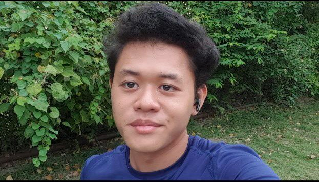

Listen to this songs while read about me
 I am Haizad, a passionate and dedicated software engineering student currently in my second year at Universiti Putra Malaysia (UPM). At 21 years old, I have developed strong technical skills in Java, HTML, CSS, Laravel, Flutter, and JavaScript. I love coding and working on projects, always eager to learn new technologies and improve my expertise. Hardworking and determined, I live by the quote, "Winners never quit, and quitters never win," which keeps me motivated to push forward and achieve my goals.
With a strong passion for technology, leadership, and personal growth, my ultimate dream is to become the best software engineer. I am committed to continuously expanding my knowledge, taking on new challenges, and making a meaningful impact in the tech industry. I believe that with perseverance, continuous learning, and a strong work ethic, I can achieve my goals and contribute to shaping the future of technology
© 2025 Haizad. All rights reserved.